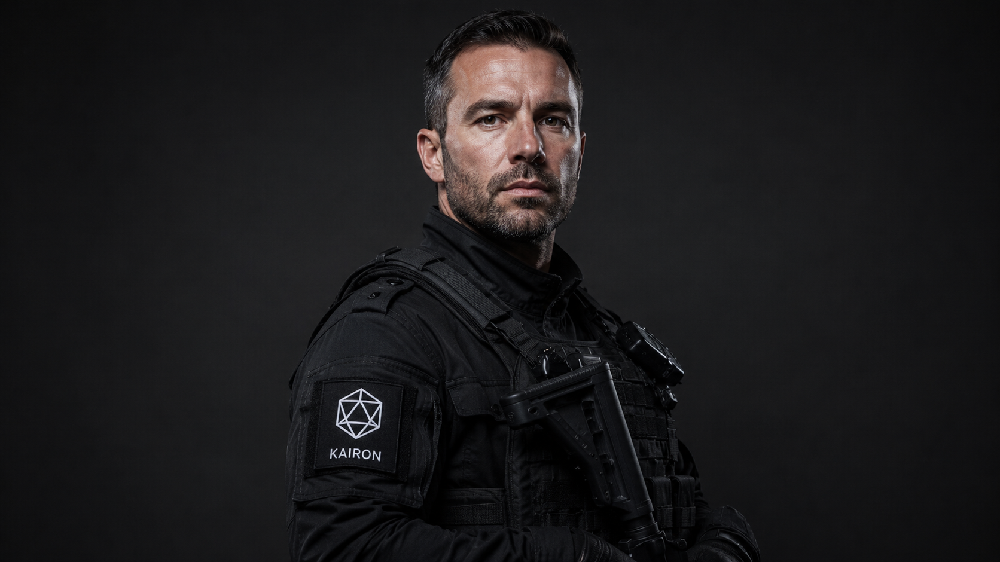

Division 01
Division 01
Sentinel Unit
Physical Security & Site Protection
Elite operatives drawn from British Army, Royal Marines, and international special operations backgrounds. The physical backbone of Kairon's global protection capability.
Site Protection
Rapid Response
Access Control
Crisis Management
View Division

Division 02
Division 02
Vanguard Unit
Executive Protection & Tactical Operations
Former tier-one special forces operators. Kairon's highest-readiness unit, deployable globally within 72 hours. The preferred choice for the world's most demanding principals.
Executive Protection
Hostile Extraction
Counter-Surveillance
Maritime Security
View Division

Division 03
Division 03
Cipher Division
Cyber Intelligence & Digital Operations
Former GCHQ and NSA analysts, offensive security researchers, and digital forensics specialists. Kairon's intelligence engine — bridging cyber and physical operational domains.
Threat Intelligence
Red Teaming
SIGINT Support
Incident Response
View Division

Division 04 — RESTRICTED
Division 04
Phantom Division
Covert Operations & Special Intelligence
Classified. The Phantom Division exists outside Kairon's standard operational framework. Access is by referral only through an existing senior Kairon engagement.
Covert Operations
Asset Recovery
Classified
Access Division